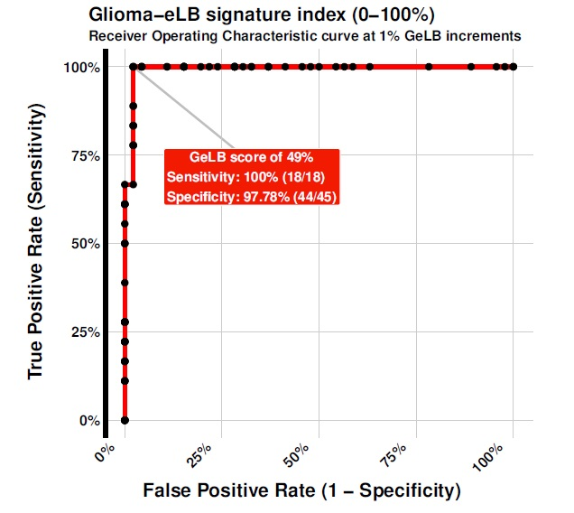
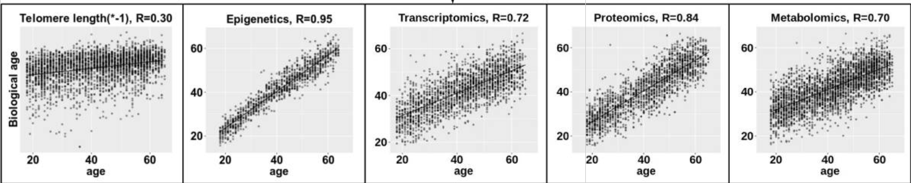
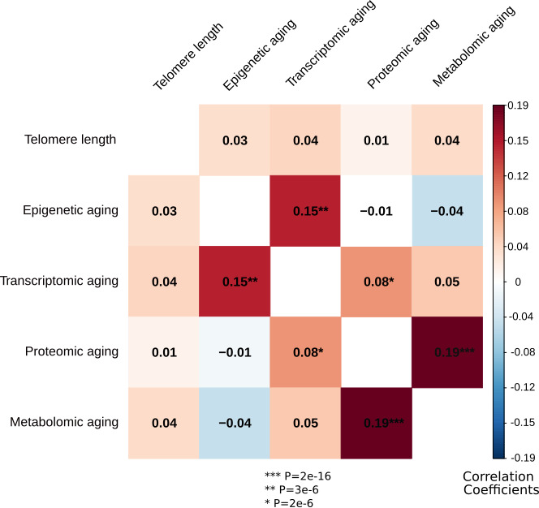
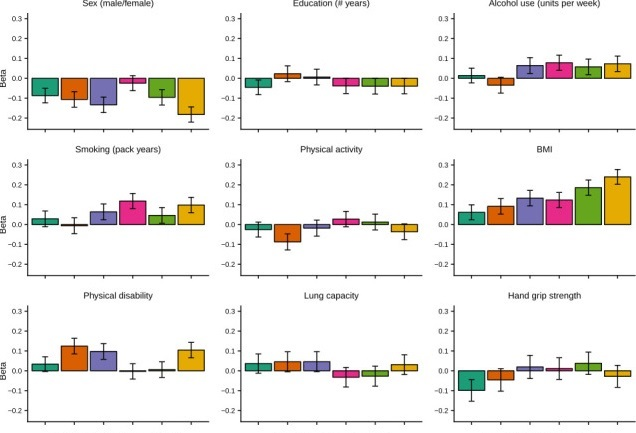
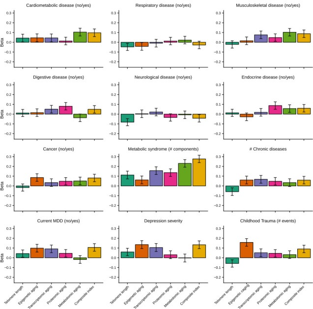
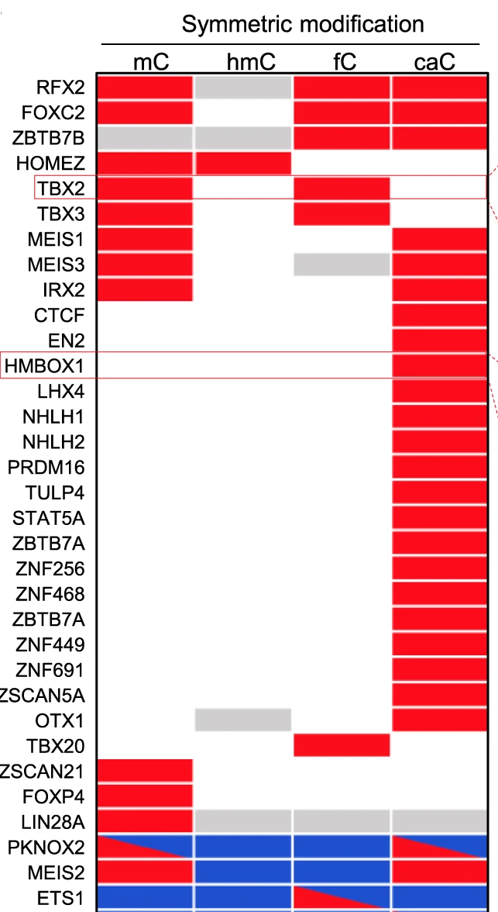

count: false class: left, bottom # Journal club ## February 22, 2021 <img src="bristol-logo.png" width="20%"> <img src="ieu-logo.png" width="17%"> --- layout: true .logo[.mrcieu[ MRC Integrative Epidemiology Unit ]] --- ## EWAS of exposures .striped[ | pmid|journal |variable |tissue |n |cohort |assocs |notes | |--------:|:-----------------------|:---------------------------------------------|:-----------------------------------------------------------|:--------------------------|:-----------------------|:----------------------|:-------------------------------------------------------------------------------------------------------------------| | 33566097|Genome Biol Evol |altitude |blood |113 |Peruvian Quechua |2 |enrichment in hypoxia-inducible factors, red blood cell production, etc. | | 33593402|Clin Epigenetics |cigarette smoking |blood |1407 |NSHD;NCDS;BCS70;TwinsUK |952 |526 on EPIC array only; 486 of these replicated; 37 persistent after cessation | ] --- ## EWAS of prenatal exposures .striped[ | pmid|journal |variable |tissue |n |cohort |assocs |notes | |--------:|:-----------------------|:---------------------------------------------|:-----------------------------------------------------------|:--------------------------|:-----------------------|:----------------------|:-------------------------------------------------------------------------------------------------------------------| | 33564054|Sci Rep |gestational age |cord and peripheral blood |110 cord; 47 peripheral | |2093 |54 sites associated with gene expression | | 33517419|Int J Epidemiol |paternal body mass index |cord and peripheral blood |4894 cord; 1982 peripheral |PACE |null |4 associations in females | | 33515580|Environ Res |prenatal lead |cord blood |364 |Korean Exposome Study |1 all; 18 males | | ] --- ## EWAS of genetic effects .striped[ | pmid|journal |variable |tissue |n |cohort |assocs |notes | |--------:|:-----------------------|:---------------------------------------------|:-----------------------------------------------------------|:--------------------------|:-----------------------|:----------------------|:-------------------------------------------------------------------------------------------------------------------| | 33554115|NAR Genom Bioinform |C9orf72 (C9) repeat expansion status |blood |1748 |Project MinE |18 |majority of probes cross-hybridized with the C9orf72 locus; suggest a ‘flag and consider’ approach; provide scripts | | 33547282|Nat Commun |Down syndrome |neonatal bloodspots |196 cases; 439 controls | |652 | | ] --- ## EWAS of phenotypes .striped[ | pmid|journal |variable |tissue |n |cohort |assocs |notes | |--------:|:-----------------------|:---------------------------------------------|:-----------------------------------------------------------|:--------------------------|:-----------------------|:----------------------|:-------------------------------------------------------------------------------------------------------------------| | 33550919|Epigenetics |adiposity |blood at 17y |1192 |Raine Study |BMI29;WC10;SFT9 | | | 33499918|Clin Epigenetics |plasma copper |blood |1243 |Chinese |4 | | | 33484127|J Clin Endocrinol Metab |thyroid function |blood at 14 and 17 |563+863 |BSGS and Raine Study |9 | | | 33466918|Int J Mol Sci |IgE sensitization |cord and peripheral blood during pregnancy and ages 2 and 5 |74 mother-child pairs |ALADDIN |null | | ] --- ## EWAS of psycho-social phenotypes .striped[ | pmid|journal |variable |tissue |n |cohort |assocs |notes | |--------:|:-----------------------|:---------------------------------------------|:-----------------------------------------------------------|:--------------------------|:-----------------------|:----------------------|:-------------------------------------------------------------------------------------------------------------------| | 33542190|Transl Psychiatry |social anxiety |blood |143 | |2 DMRs | | | 33528912|Aging Cell |cognitive score | |400 twins | |9 of top 65 replicated |used 'generalized correlation coefficient' rather than linear models | | 33494854|Dev Psychopathol |trajectories of social communication deficits |cord and peripheral blood |804 cord; 877 blood age 7 |ALSPAC |3 cord |Not replicated in GenR | ] --- .ii[ ## Glioma risk in serum cell-free DNA > Sabedot et al. **A serum-based DNA methylation assay provides accurate detection of glioma**. Neuro Oncol. 2021 Feb 9:noab023. **Training data** cell-free DNA methylation profiles from blood serum, n=38 cases and n=42 controls **Methods** random forest **Testing data** n=10 cases and n=34 controls ] -- .ii[  ] --- ## Multi-omic clocks > Jansen R, Han LK, Verhoeven JE, Aberg KA, van den Oord EC, Milaneschi Y, Penninx BW. **An integrative study of five biological clocks in somatic and mental health**. Elife. 2021 Feb 9;10:e59479. **Data** n=1130-2936, blood, mean age 41, males and females **Methods** Use elastic net to build models of chronological age  --- .ii[ ## Multi-omic clocks, continued After regressing out chronological age, clocks not highly correlated ] .ii[  ] --- .ii[ ## Multi-omic clocks, continued Effects of associations with health determinants * composite is just the sum of each score scaled * sample size ~600  ] .gap[ ] .ii[ <br> <br> <br>  ] --- ## Multi-omic clocks, continued .larger[.larger[ *"The large effect sizes of the composite index and the low correlation between biological aging indicators suggest that one's biological age is best reflected by combining aging measures from multiple cellular levels."* ]] -- <br> .center[Do you agree?] -- <br> .center[How does one interpret associations with a multi-omics clock?] -- .center[*It might just be omics-ed up*.] --- ## Epigenetics in cancer Nature news & views > Sroka MW, Vakoc CR. **An epigenetic tipping point in cancer comes under the microscope**. Nature. 2021 Feb;590(7846):399-400. - NSD3 methylates histone H3 at lysine residues 4 and 27 - NSD3 is mutated and hyperactive in some human cancers - Some evidence for possible treatment by inhibiting NSD3 --- ## Reference: Multi-tissue chromatin states in ENCODE+Roadmap+GGR > Boix CA, James BT, Park YP, Meuleman W, Kellis M. **Regulatory genomic circuitry of human disease loci by integrative epigenomics**. Nature. 2021 Feb;590(7845):300-307. **EpiMap** +18 types of chromatin profiles (e.g. H3K27ac, CTCF, DNase I hypersensitive) +833 biosamples from ENCODE, Roadmap and Genomics of Gene Regulation +540 traits = call chromatin states and active-enhancer states http://compbio.mit.edu/epimap --- ## Reference: effects of epigenetic DNA modifications on transcription factor binding > Song G, Wang G, Luo X, Cheng Y, Song Q, Wan J, Moore C, Song H, Jin P, Qian J, Zhu H. **An all-to-all approach to the identification of sequence-specific readers for epigenetic DNA modifications on cytosine**. Nat Commun. 2021 Feb 4;12(1):795. **DNA modifications:** 5-methylcytosine, 5-hydroxymethylcytosine, 5-formylcytosine, and 5-carboxylcytosine **Transcription factors:** 1239 -- **Conclusions** - enhance/suppress binding depends on context - modifications can effect binding specificity - symmetric modifications have stronger effects than hemi-modifications (i.e. modifications on both strands) -- .right[  ] --- ## Reference: Transcription factor binding > Yan, et al. **Systematic analysis of binding of transcription factors to noncoding variants**. Nature. 2021 Jan 27. Systematically evaluated **binding** of 270 transcription factors **to** 96K non-coding variants -- **Conclusions** - position weight matrices lack predictive power - support vector machine combined with gapped k-mer representation better Ghandi M, Lee D, Mohammad-Noori M, Beer MA (2014) **Enhanced Regulatory Sequence Prediction Using Gapped k-mer Features**. PLoS Comput Biol 10(7): e1003711. - 'highly predictive models for 94 transcription factors' https://alkesgroup.broadinstitute.org/LDSCORE/ --- ## https://alkesgroup.broadinstitute.org/LDSCORE/ -- **Enter genomic coordinates:** chr21:234344-234500 -- <img src="tinder.jpg" style="width:50px"/> **Message to**: *ODYL10* (transcription factor) chr21:234344-234500 (locus) would like meet up with you! -- **Reply** -- * No, nothing about you interests me. -- * No, your current chromatin status is repellent. But you might be rather nice underneath it all. -- * Interesting, tell me more about yourself. What kind of epigenetic modifications do you prefer? -- * Yeesssss! We were born for each other.